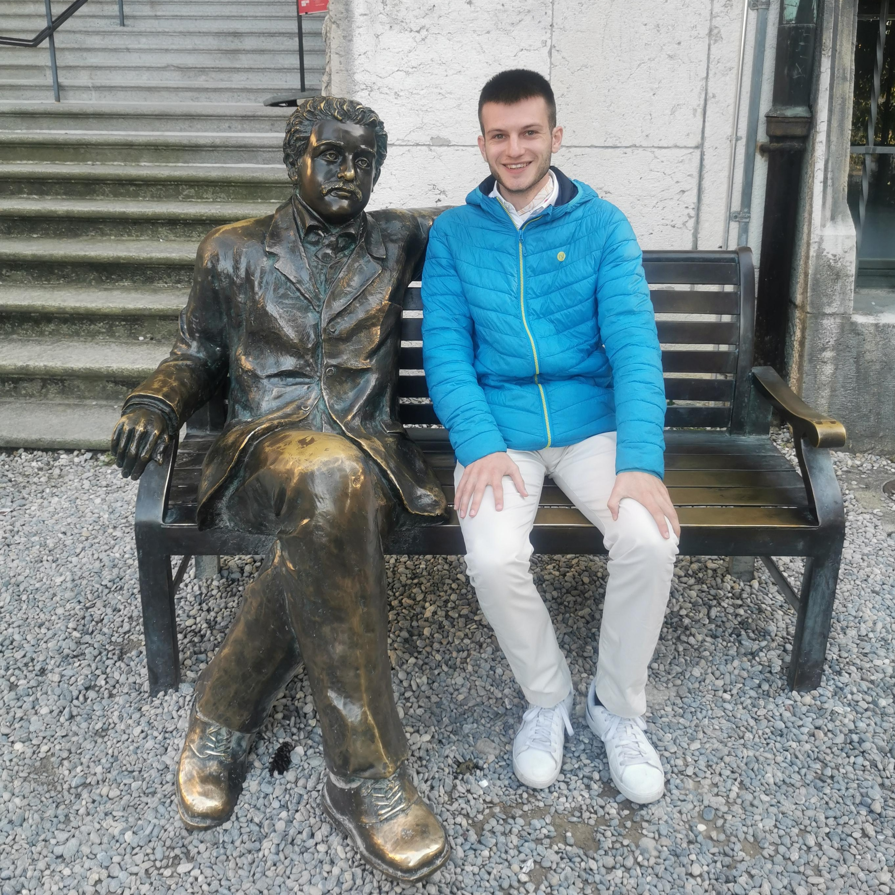

PhD student in Mathematics — Bergische Universität Wuppertal
I am a PhD student under the supervision of Britta Späth in the Algebra and Number Theory group at the Bergische Universität Wuppertal. I am also part of the research training group GRK 2240. Before that, I obtained my bachelor's and master's degree at the École Polytechnique Fédérale de Lausanne (EPFL), writing my master thesis under the supervision of Donna Testerman.
My research interests are mostly in (modular) representation theory of finite groups and of linear algebraic groups. I am currently working on the Alperin–McKay conjecture.
When I am not doing math, I like to read novels, play curling and backgammon, and hike in the mountains.
Email: mancini@uni-wuppertal.de
ORCID: 0009-0009-8789-2163